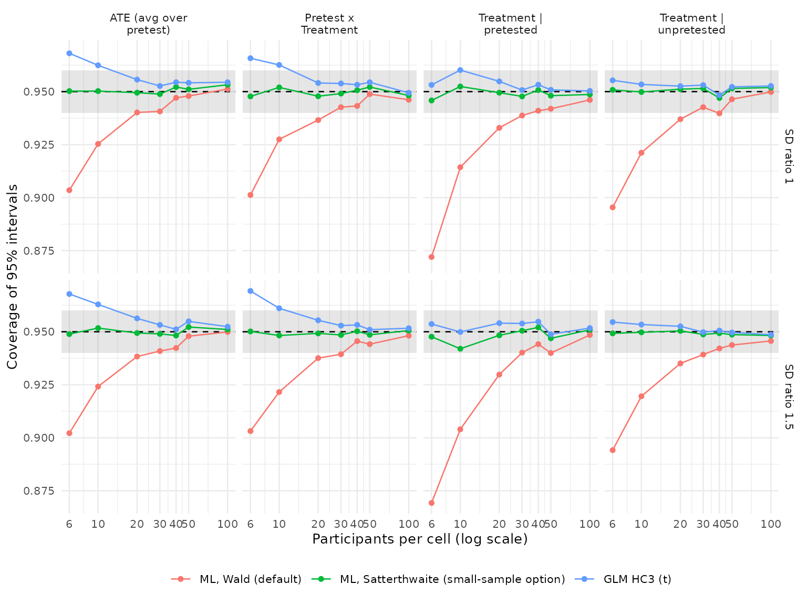

Validating fit_solomon_ml(): A Simulation Study
Source:vignettes/articles/ml-validation.Rmd
ml-validation.RmdThis article reports the simulation validation of
fit_solomon_ml(). The aims, data-generating mechanisms,
estimands, methods, performance measures, and tolerances were posted to
issue #10
before any results were examined, following the ADEMP structure of
Morris, White and Crowther (2019).
The first run found that the default Wald intervals were too narrow in small samples, which led to the small-sample option in issue #22. Before the results reported here were examined, the protocol was amended on that issue in three ways:
- 30 and 40 participants per cell were added;
- the exploratory small-sample method was replaced by the implemented
inference = "satterthwaite"option; - a rule for the small-sample warning threshold was added.
This run supersedes the first; the first run’s results remain in the package’s version history.
Design
Aims. Check whether fit_solomon_ml()
recovers the four Solomon contrasts, whether its standard errors are
calibrated, and whether its 95% intervals reach nominal coverage. Both
inference options are evaluated:
-
inference = "wald", the default, which follows van Engelenburg (1999); -
inference = "satterthwaite", which uses unbiased residual variances within each pretest condition and Welch-Satterthwaite degrees of freedom for contrasts that combine them (Satterthwaite, 1946; Welch, 1947).
Both are compared with the unified GLM using HC3 standard errors and
t reference distributions. A further aim is to locate the cell size
below which fit_solomon_ml() warns that Wald inference may
be unreliable.
Data-generating mechanisms. A full factorial of 84 scenarios crosses four factors:
- participants per cell: 6, 10, 20, 30, 40, 50, 100;
- sensitization: 0 or 0.3;
- pretest-posttest correlation: 0, 0.5, or 0.8;
- residual standard deviation of treated relative to control participants: 1 or 1.5.
Every participant has a latent baseline that only pretested participants observe, so structural pretest absence is present in every scenario. The treatment effect is 0.5 among unpretested participants and 0.5 plus the sensitization among pretested participants.
Performance measures. Each of the following comes with its Monte Carlo standard error (MCSE), from 2,000 replications per scenario:
- bias;
- empirical and model-based standard errors;
- coverage of 95% intervals;
- the rejection rate at alpha = .05;
- fit failures.
Tolerances.
- Bias within 2 MCSE of zero.
- Coverage between 0.940 and 0.960.
- Model standard errors within 5% of the empirical standard error.
- Type I error for the sensitization test between 0.040 and 0.060 when there is no sensitization.
- No fit failures.
Warning threshold rule. The threshold is the smallest cell size at which Wald inference meets both of the following criteria within each residual-SD ratio, at that size and at every larger size studied:
- mean coverage of at least 0.940;
- mean sensitization Type I error of at most 0.060.
These are the liberal edges of the tolerance bands. The warning concerns intervals that are too narrow, so over-coverage does not count against Wald inference.
Fit failures
| Method | Failed fits across all scenarios |
|---|---|
| ML, Wald (default) | 0 |
| ML, Satterthwaite (small-sample option) | 0 |
| GLM HC3 (t) | 0 |
Coverage
#> Warning in scale_x_log10(breaks = cell_sizes): log-10
#> transformation introduced infinite values.
Coverage is averaged over the correlation and sensitization
conditions; the shaded band is the pre-declared tolerance.
Scenario-level values and their MCSEs are in
ml-validation/performance.csv.
| Method | n = 6 | n = 10 | n = 20 | n = 30 | n = 40 | n = 50 | n = 100 |
|---|---|---|---|---|---|---|---|
| ML, Wald (default) | 0.893 | 0.920 | 0.936 | 0.941 | 0.943 | 0.945 | 0.948 |
| ML, Satterthwaite (small-sample option) | 0.949 | 0.950 | 0.949 | 0.949 | 0.950 | 0.950 | 0.950 |
| GLM HC3 (t) | 0.961 | 0.958 | 0.954 | 0.953 | 0.952 | 0.952 | 0.951 |
| Method | n = 6 | n = 10 | n = 20 | n = 30 | n = 40 | n = 50 | n = 100 |
|---|---|---|---|---|---|---|---|
| ML, Wald (default) | 0.860 | 0.891 | 0.922 | 0.933 | 0.932 | 0.930 | 0.936 |
| ML, Satterthwaite (small-sample option) | 0.931 | 0.933 | 0.941 | 0.944 | 0.936 | 0.935 | 0.940 |
| GLM HC3 (t) | 0.947 | 0.943 | 0.944 | 0.947 | 0.940 | 0.938 | 0.941 |
Bias
| Method | Largest absolute bias | Estimates beyond 2 MCSE |
|---|---|---|
| ML, Wald (default) | 0.028 | 17 of 336 |
| ML, Satterthwaite (small-sample option) | 0.028 | 17 of 336 |
| GLM HC3 (t) | 0.028 | 17 of 336 |
The three methods produce identical point estimates, so their bias is identical. With 2 MCSE as the tolerance, roughly 5% of scenario-by-contrast estimates are expected to fall outside it by chance even for an unbiased estimator.
Standard error calibration
| Method | n = 6 | n = 10 | n = 20 | n = 30 | n = 40 | n = 50 | n = 100 |
|---|---|---|---|---|---|---|---|
| ML, Wald (default) | -10.8% | -6.5% | -3.0% | -2.3% | -1.6% | -1.2% | -0.4% |
| ML, Satterthwaite (small-sample option) | +0.1% | -0.2% | +0.1% | -0.2% | -0.1% | -0.0% | +0.2% |
| GLM HC3 (t) | +14.0% | +7.1% | +3.4% | +1.9% | +1.5% | +1.3% | +0.8% |
Type I error for sensitization
| Method | n = 6 | n = 10 | n = 20 | n = 30 | n = 40 | n = 50 | n = 100 |
|---|---|---|---|---|---|---|---|
| ML, Wald (default) | 0.099 | 0.077 | 0.064 | 0.059 | 0.057 | 0.054 | 0.053 |
| ML, Satterthwaite (small-sample option) | 0.052 | 0.052 | 0.053 | 0.051 | 0.051 | 0.050 | 0.051 |
| GLM HC3 (t) | 0.034 | 0.038 | 0.047 | 0.046 | 0.048 | 0.048 | 0.050 |
Scenarios meeting every tolerance
| Method | n = 6 | n = 10 | n = 20 | n = 30 | n = 40 | n = 50 | n = 100 |
|---|---|---|---|---|---|---|---|
| ML, Wald (default) | 0 of 12 | 0 of 12 | 0 of 12 | 2 of 12 | 3 of 12 | 5 of 12 | 8 of 12 |
| ML, Satterthwaite (small-sample option) | 8 of 12 | 6 of 12 | 11 of 12 | 11 of 12 | 8 of 12 | 9 of 12 | 9 of 12 |
| GLM HC3 (t) | 0 of 12 | 0 of 12 | 5 of 12 | 10 of 12 | 7 of 12 | 7 of 12 | 8 of 12 |
Warning threshold
| Participants per cell | SD ratio | Mean coverage | Type I error | Meets both criteria |
|---|---|---|---|---|
| 6 | 1.0 | 0.893 | 0.102 | no |
| 6 | 1.5 | 0.892 | 0.095 | no |
| 10 | 1.0 | 0.922 | 0.075 | no |
| 10 | 1.5 | 0.917 | 0.079 | no |
| 20 | 1.0 | 0.937 | 0.061 | no |
| 20 | 1.5 | 0.935 | 0.067 | no |
| 30 | 1.0 | 0.941 | 0.056 | yes |
| 30 | 1.5 | 0.940 | 0.063 | no |
| 40 | 1.0 | 0.943 | 0.059 | yes |
| 40 | 1.5 | 0.944 | 0.055 | yes |
| 50 | 1.0 | 0.946 | 0.050 | yes |
| 50 | 1.5 | 0.944 | 0.058 | yes |
| 100 | 1.0 | 0.948 | 0.054 | yes |
| 100 | 1.5 | 0.948 | 0.053 | yes |
By this rule, the threshold is 40 participants per cell.
fit_solomon_ml() warns when the smallest cell has fewer
participants and inference was not supplied.
Conclusions
Estimand recovery is validated. All three methods produce the same point estimates. The largest absolute bias was 0.028 standard-deviation units, at 6 participants per cell. 17 of 336 scenario-by-contrast estimates (5.1%) fell outside 2 MCSE, close to the 15 expected by chance. No fit failed.
Default Wald inference from fit_solomon_ml() is
too liberal in small samples.
- Coverage. Mean coverage of its 95% intervals was 0.893 with 6 participants per cell, 0.920 with 10, 0.936 with 20, and 0.941 with 30, rising to 0.948 at 100. The treatment effect among pretested participants was affected most, with mean coverage of 0.871 at 6 per cell.
- Standard errors. They were 10.8% too small at 6 per cell and 6.5% too small at 10.
- Type I error. The sensitization test rejected a true null 9.9% of the time at 6 per cell, 7.7% at 10, and 6.4% at 20.
- Tolerances. Wald inference met every tolerance in none of the scenarios with 20 or fewer participants per cell, in 2 of 12 at 30, 3 of 12 at 40, 5 of 12 at 50, and 8 of 12 at 100.
The warning threshold is 40 participants per cell.
- At 30 per cell, Wald inference narrowly failed the rule with unequal residual variances: mean coverage was 0.9399 and Type I error 0.063.
- From 40 per cell onward, it met both criteria in both variance conditions.
- The threshold marks where Wald inference becomes approximately adequate, not exact. At 40 and 50 per cell its mean coverage was still 0.943 and 0.945, and about a quarter of scenario-by-contrast coverage values fell below 0.940.
The small-sample option was calibrated at every cell size.
- Calibration. Mean coverage was between 0.949 and 0.950, and Type I error between 0.050 and 0.053. Model standard errors were within 0.2% of the empirical standard errors on average and within 5% in every scenario.
- Misses match Monte Carlo error. 14 of 336 coverage values fell outside 0.940 to 0.960, against 13.5 expected by chance. 3 of 42 sensitization Type I error rates fell outside 0.040 to 0.060, the most extreme at 0.0625.
- Lowest coverage. 0.931, for the ATE with 6 participants per cell and unequal residual variances.
The unified GLM with HC3 is conservative in small samples.
- Over-coverage. Its intervals over-covered at 10 or fewer participants per cell, with mean coverage of 0.961 at 6 and 0.958 at 10.
- Standard errors. They overestimated variability by 14.0% at 6 per cell and 7.1% at 10.
- Type I error. The sensitization test’s Type I error was 0.034 at 6 per cell.
- Near nominal from 20 per cell. Mean coverage was 0.951 to 0.954, and its lowest coverage in any scenario was 0.938.
Unequal residual standard deviations between arms (ratio 1.5) changed mean coverage by less than 0.01 for every method at every cell size.
Practical guidance from this validation:
- With fewer than 40 participants in the smallest cell, use
fit_solomon_ml(inference = "satterthwaite")orfit_solomon_glm()rather than the default Wald intervals. - The small-sample option can be used at any cell size; with 100 participants per cell its results and those of Wald inference are close.
-
fit_solomon_glm()with HC3 errs on the conservative side with 10 or fewer participants per cell.
Not covered: non-normal errors, clustered designs, missing posttest scores, and incidental pretest missingness.
Reproducing these results
The simulation script is
vignettes/articles/ml-validation/ml-simulation.R in the
package repository. It was run with R 4.6.1, base seed 20260914, and
2,000 replications per scenario.
The run used the development version of the package that implemented
the small-sample option, based on commit 4e1d820;
run-information.csv records this. In that version, the
estimation and inference code of fit_solomon_ml() and
fit_solomon_glm() is identical to the code committed with
this article. Later changes affected only documentation and the warning
threshold, and the simulation suppresses warnings.
References
Morris, T. P., White, I. R., & Crowther, M. J. (2019). Using simulation studies to evaluate statistical methods. Statistics in Medicine, 38, 2074-2102.
Satterthwaite, F. E. (1946). An approximate distribution of estimates of variance components. Biometrics Bulletin, 2, 110-114.
van Engelenburg, G. (1999). Statistical analysis for the Solomon four-group design (Research Report 99-06). University of Twente.
Welch, B. L. (1947). The generalization of “Student’s” problem when several different population variances are involved. Biometrika, 34, 28-35.